Practical Malware Analysis - Lab 14
This chapter’s labs focus on identifying the networking components of malware. To some degree, these labs build on Chapter 13, since when developing network signatures, you’ll often need to deal with encoded content.
Lab 14-1
Analyze the malware found in file Lab14-01.exe. This program is not harmful to your system.
Q1: Which networking libraries does the malware use, and what are their advantages?
urlmon library, their advantages is when you download a file from the web, Internet Explorer calls the urlmon.dll file to perform its action, so it can blend in with normal activity
Q2: What source elements are used to construct the networking beacon, and what conditions would cause the beacon to change?
Let’s see where it is called
the buffer variable is the url that it calls to download, which is set with the _sprintf with variable string called str
cross reference the function to see what is str pushed to it
we see it was passed to call 4010BB
into the call we find it’s a Base64 encoding routine
Out the function to see what is the str encoded, it is set with _sprintf to var10098
following where var 10098 is set, it is set with _sprintf to ecx contents
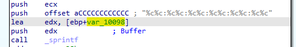Finally we see that ECX contains contents of call to GetCurrentHwProfileA which “Retrieves information about the current hardware profile for the local computer.”
can be seen here HKLM\SYSTEM\CurrentControlSet\HardwareProfiles
.. image:: 1q9.png
So it sends data like a Get request to http://www.practicalmalwareanalysis.com/%s/%c.png as s parameter and c parameter the count of string
Q3: Why might the information embedded in the networking beacon be of interest to the attacker?
With the use of Network Address Translation (NAT) and proxy solutions, which disguise the host making outbound requests. All requests look like they are coming from the proxy IP address instead. Attackers waiting for requests from malware likewise have difficulty identifying which (infected) host is communicating. So It helps the attacker to know which host it is using
Q4: Does the malware use standard Base64 encoding? If not, how is the encoding unusual?
Revisiting Base64 function all looks normal Base64
then into the indexing function, the only thing unusual it is using character ‘a’ instead of ‘=’ at padding (when v3 which is the input bytes grouped into 3 ,current group , so in last group when it is only 1 or 2 it uses the pad character)
5: What is the overall purpose of this malware?
It grabs host information, then in a loop call the function which sends those information

And in that function it sends the information with a request to download to specified name, then creates a process to start the download file
Q6: What elements of the malware’s communication may be effectively detected using a network signature?
As it is using what normally Internet Explorer calls the urlmon.dll. no issues will be in headers, then we can use the HKLM\SYSTEM\CurrentControlSet\HardwareProfiles for hardware string plus - plus username send as request to host practicalmalwareanalysis.com
Q7: What mistakes might analysts make in trying to develop a signature for this malware?
Tryinh the malware on same host thinking that it requests same path but it changes depending on the host
Q8: What set of signatures would detect this malware (and future variants)?
Running the malware with Fakenet we get which we know is Base64 encoded
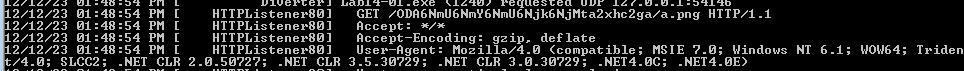removing the a at the end as it’s not known padding we get
Creating regex to capture this, we 6 is put for each column and t for each dash plus our username then Base64 encoded (which for each 3 bytes outputs 4 bytes)
/[A-Za-z0-9+\/]{3}6[A-Za-z0-9+\/]{3}6[A-Za-z0-9+\/]{3}6[A-Za-z0-9+\/]{3}6[A-Za-z0-9+\/]{3}6[A-Za-z0-9+\/]{3}t[A-Za-z0-9+\/]*a{0,2}/gm
snort rule
alert tcp $HOME_NET any -> $EXTERNAL_NET $HTTP_PORTS (msg:"PM14.1.1 Colons and
dash"; urilen:>32; content:"GET|20|/"; depth:5; pcre:"/GET\x20\/[A-Za-z0-9+\/]
{3}6[A-Za-z0-9+\/]{3}6[A-Za-z0-9+\/]{3}6[A-Za-z0-9+\/]{3}6[A-Za-z0-9+\/]{3}6[A-Za-z0-9+\/]
{3}t[A-Za-z0-9+\/]*a{0,2}\//"; sid:20001411; rev:1;)
Lab 14-2
Analyze the malware found in file Lab14-02.exe. This malware has been configured to beacon to a hard-coded loopback address in order to prevent it from harming your system, but imagine that it is a hard-coded external address.
Q1: What are the advantages or disadvantages of coding malware to use direct IP addresses?
The attacker may find static IP addresses more difficult to manage than domain names. Using DNS allows the attacker to deploy his assets to any computer and dynamically redirect his bots by changing only a DNS address. | The defender has various options for deploying defenses for both types of infrastructure, but for similar reasons, IP addresses can be more difficult to deal with than domain names. This fact alone could lead an attacker to choose static IP addresses over domains.
Q2: Which networking libraries does this malware use? What are the advantages or disadvantages of using these libraries?
WinInet.dll
The malware uses the WinINet libraries. One disadvantage of these libraries is that a hard-coded User-Agent needs to be provided, and optional headers need to be hard-coded if desired. One advantage of the WinINet libraries over the Winsock API, for example, is that some elements, such as cookies and caching headers, are provided by the OS.
https://learn.microsoft.com/en-us/windows/win32/wininet/wininet-vs-winhttp
Q3: What is the source of the URL that the malware uses for beaconing? What advantages does this source offer?
OpenUrl is used in two functions
We see it is passed as a parameter
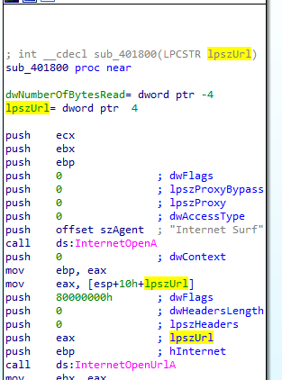tracing back two function calls we find it is loading it from the exe string resource https://learn.microsoft.com/en-us/windows/win32/api/winuser/nf-winuser-loadstringa
dumping .rsrc then do strings we find this url
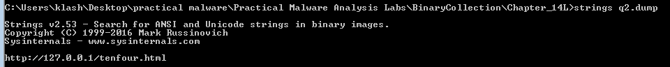The attacker can use the resource section to deploy multiple backdoors to multiple command-and-control locations without needing to recompile the malware, but it will be easily detectable
Q4: Which aspect of the HTTP protocol does the malware leverage to achieve its objectives?
Analysis ->
At the start we it uses create pipe one for read and one for write then passing the write to stdoutput of the process and the read for stdinput | So it creates a reverse shell with the command line (passed as arguemnt to create process)
then it creates two threads with that process
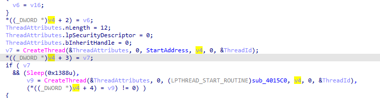First thread function call it copies data from pipe with peekNamepipe (to check for new input) copies it then passes it to 401000 routine then outputs into routine 401750
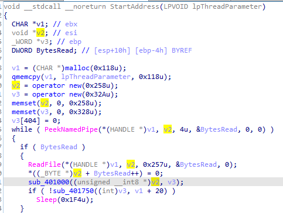401000 is some encoding routine, 401750 gets the encoded data prepends ‘(!<’ to it that put that in the User-Agent then runs the url
the encoding routine sounds like Base64 with custom indexing string WXYZlabcd3fghijko12e456789ABCDEFGHIJKL+/MNOPQRSTUVmn0pqrstuvwxyz


The second thread function calls 4015C0 which uses similar 401800 call which use wininet, it is the thread responsible for receiving commands then writing it to the pipe
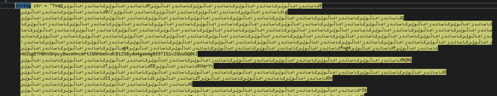it reads command with User-Agent: Internet Surf
 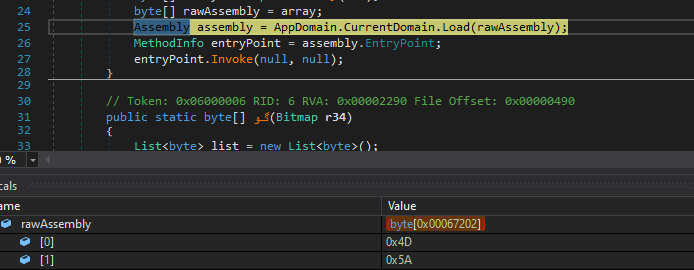
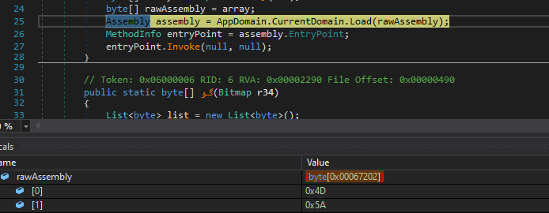
so the first thread reads pipe then sends data, second thread receives data writes to pipe (commands)
Running the malware we get the following two requests


which seems if no command given to last request it waits for a command though in background
then in the end it deletes itself when thread fails or exit is passed
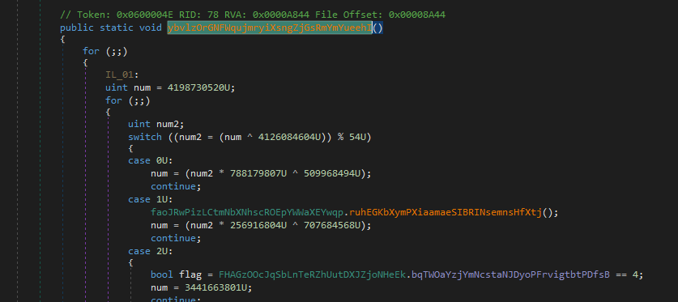 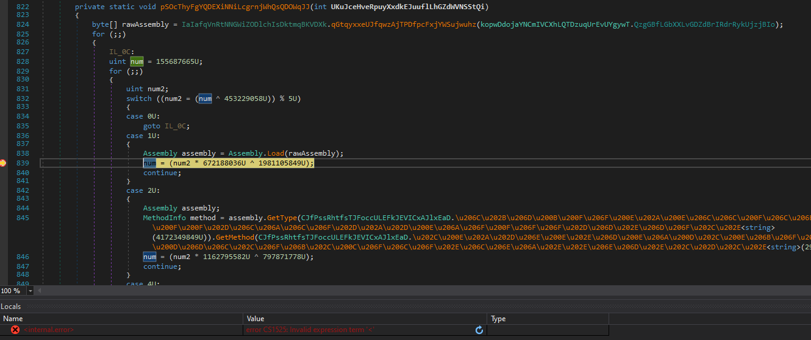
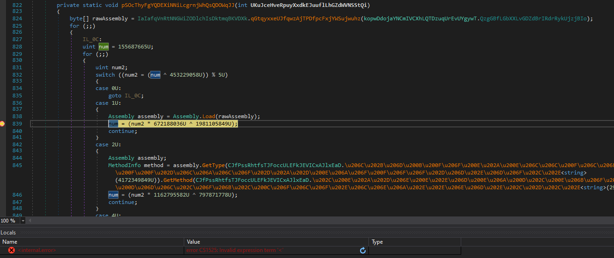
Q5: What kind of information is communicated in the malware’s initial beacon?
My command propmt

Q6: What are some disadvantages in the design of this malware’s communication channels?
While the attacker encodes outgoing information, he doesn’t encode the incoming commands. Also, because the server must distinguish between the two communication channels via the static elements of the User-Agent fields, this server dependency is apparent and can be targeted with signatures.
Q7: Is the malware’s encoding scheme standard?
Base64 with custom indexing string alphabet
Q8: How is communication terminated?
above
Q9: What is the purpose of this malware, and what role might it play in the attacker’s arsenal?
likely a dropper, or setting up as it self destructs
snort rules
alert tcp $HOME_NET any -> $EXTERNAL_NET $HTTP_PORTS (msg:"PM14.2.1 Suspicious
User-Agent (Internet Surf)"; content: "User-Agent\:|20|Internet|20|Surf";
http_header; sid:20001421; rev:1;)
alert tcp $HOME_NET any -> $EXTERNAL_NET $HTTP_PORTS (msg:"PM14.2.2 Suspicious
User-Agent (starts (!<)"; content: "User-Agent\:|20|(!<"; http_header;
sid:20001422; rev:1;)
alert tcp $HOME_NET any -> $EXTERNAL_NET $HTTP_PORTS (msg:"PM14.2.3 Suspicious
User-Agent (long B64)"; content:"User-Agent\:|20|"; content:!"|20|"; distance:0;
within:100; pcre:"/User-Agent:\x20[^\x0d]{0,5}[A-Za-z0-9+\/]{100,}/";
sid:20001423; rev:1;)
Lab 14-3
This lab builds on Lab 14-1. Imagine that this malware is an attempt by the attacker to improve his techniques. Analyze the malware found in file Lab14-03.exe.
Q1: What hard-coded elements are used in the initial beacon? What elements, if any, would make a good signature?
Q2: What elements of the initial beacon may not be conducive to a longlasting signature?
3: How does the malware obtain commands? What example from the chapter used a similar methodology? What are the advantages of this technique?
4: When the malware receives input, what checks are performed on the input to determine whether it is a valid command? How does the attacker hide the list of commands the malware is searching for?
Q5: What type of encoding is used for command arguments? How is it different from Base64, and what advantages or disadvantages does it offer?
Q6: What commands are available to this malware?
Q7: What is the purpose of this malware?
8: This chapter introduced the idea of targeting different areas of code with independent signatures (where possible) in order to add resiliency to network indicators. What are some distinct areas of code or configuration data that can be targeted by network signatures?
Q9: What set of signatures should be used for this malware?